| ・ GPU講座2020 (R02.07.07) | |||
去年はPIVでしたが、今回はホログラフィについて初回講師のM2M4さんが再びレクチャーです。 計測研がGPUを使えるようになった立役者です。今回は導入時のトラブルと基本的なGPUの説明、ホログラフィ実装時の注意点についてでした。 |
|||
|
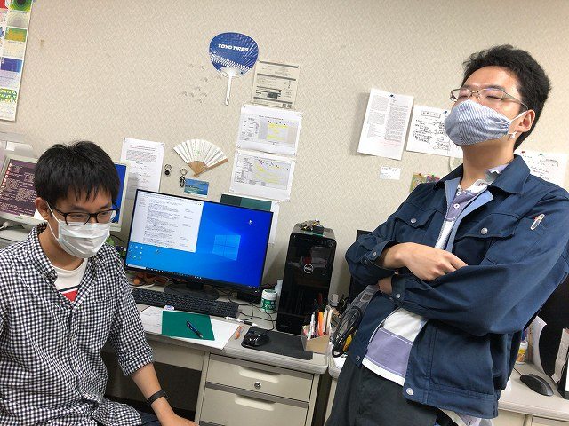
いつもならFの部屋ですが |
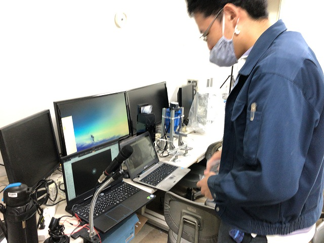
M4さんがFの部屋からオンライン | ||
|
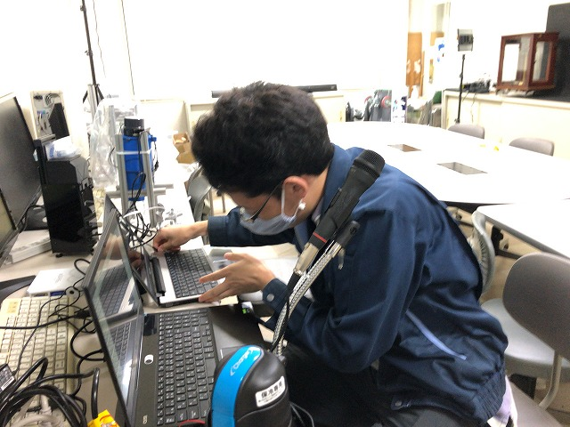
マルチディスプレイがやりやすいとのこと |
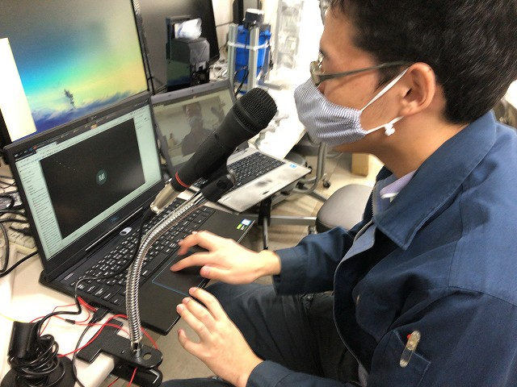
マイクはお手頃なソニーの | ||
|
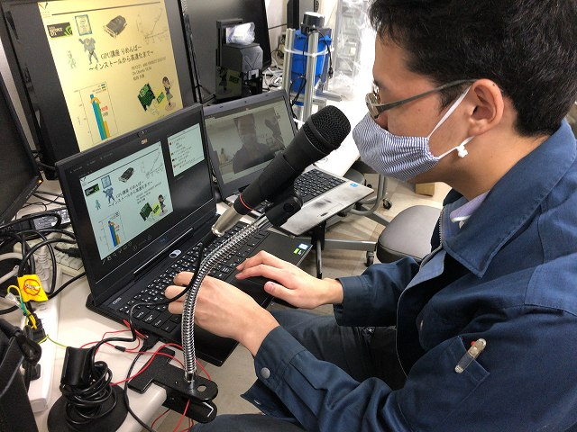
准教授の人の私物 |
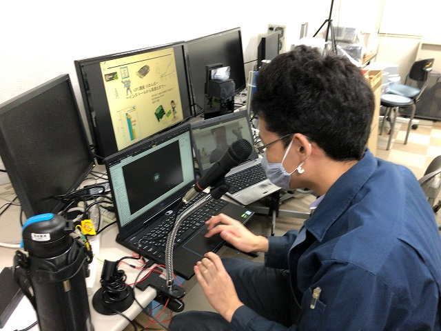
オンラインレクチャー環境整いました | ||
|
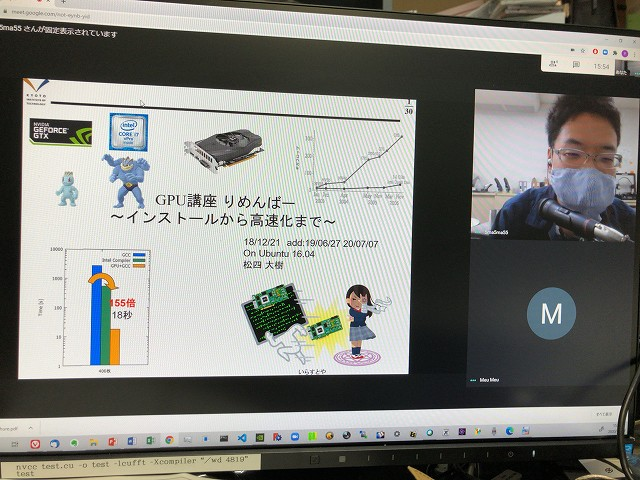
開始 |
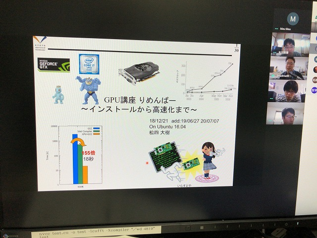
WebExです | ||
|
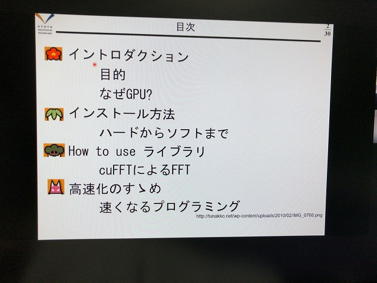
おしながき |
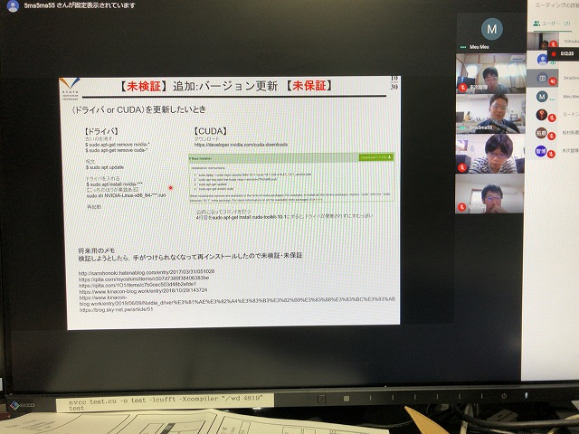
ノウハウ的な話 | ||
|
16.04での設定が地獄でした |
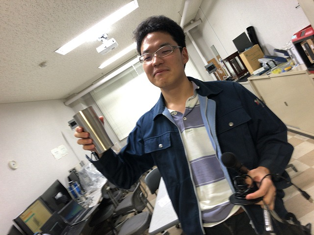
GPUがもっと広がるように！ | ||